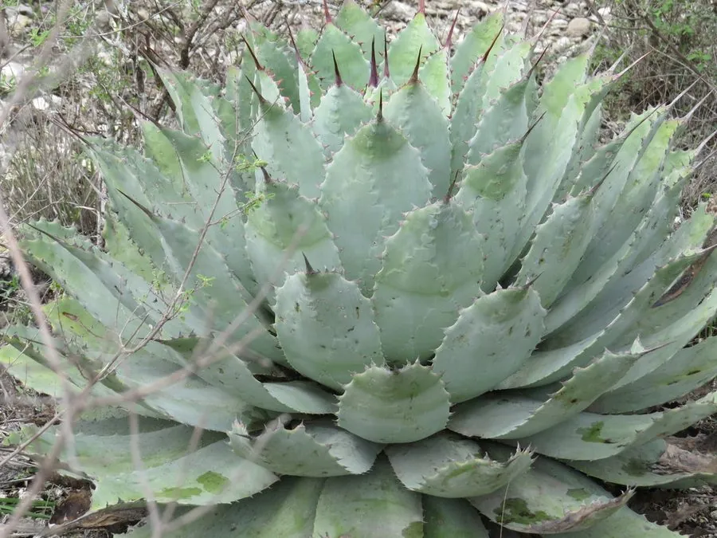

多肉植物 · 植物界
吉祥冠 Agave potatorum

天门冬科龙舌兰属中型多肉，叶片短宽、边缘有红褐色齿，莲座紧凑，原产墨西哥，是龙舌兰中株型精致的观赏种类。
- 分类
- 门被子植物门纲单子叶植物纲目天门冬目科天门冬科属龙舌兰属
- 栖息环境
- 墨西哥瓦哈卡州干旱山地的岩坡与砾石地
- 地理分布
- 原产墨西哥瓦哈卡州，世界各地盆栽观赏
- 保护级别
- 暂无评估
物种志
吉祥冠为天门冬科龙舌兰属的多年生肉质草本，叶片短而宽，卵形或倒披针形，长 20–40 厘米，灰绿色，表面覆薄白粉，叶缘有红褐色或灰褐色齿刺，顶端有一枚长刺。叶片放射状排列成紧凑的莲座，直径 40–60 厘米。花葶高 2–3 米，花黄绿色，花期夏季，开花后母株枯死；果实为蒴果。
吉祥冠原产墨西哥瓦哈卡州的干旱山地，喜阳光充足、温暖干燥和通风良好的环境，耐旱、怕积水，不耐严寒。它株型紧凑、叶缘齿刺鲜明，是龙舌兰中姿态精致的种类，适合盆栽和景观栽培。栽培用排水良好的颗粒土，生长期干透浇透，冬季保持 5℃ 以上；繁殖以分株和播种为主，也可用花葶上的珠芽繁殖。
形态与习性
- 冠幅莲座直径 40–60 厘米
- 叶片短宽，灰绿色，叶缘有红褐色齿
- 花期夏季，花葶高 2–3 米
- 光照喜充足阳光
- 水分耐旱，干透浇透
- 土壤排水良好的颗粒土
- 繁殖分株、播种、珠芽
- 特点株型紧凑，齿刺鲜明
趣味知识
- 吉祥冠的叶片短宽、边缘有红褐色齿，株型比龙舌兰紧凑。
- 它开花后母株会枯死，但会留下珠芽和种子。
- 吉祥冠原产墨西哥瓦哈卡州，是当地干旱山地常见植物。